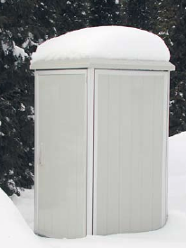
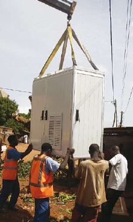

 Not mentioning creation of brand-new networks, one of the biggest tasks for telecommunication network is protection of already made investments and re-usage of the biggest possible part of already existing cable-networks. This possibility is given by access systems. Access systems enable gradual changing distributive copper wires with fibre optics. This solution allows using existing exchange lines not only for transmission telephone and ISDN services, but also for transmission 2Mb/s flux with using digital exchange line technology.
 The technology of access exchange guarantees updating existing transmission network with usage of valuable electronic equipment. In order to lower the costs of modernisation, the most common solution is joining old part of installation (copper wires) with new one (fibre optic cables) in outdoor access cabinets (like SZD). The main task of outdoor access cabinet is full protection of installed equipment. The cabinet fulfils the requirements of protection against negative influence of environment (rain and snow falls, sun, dust etc) and vandalism. Another very important task of SZD cabinets is providing specified climatic conditions which depend on installed equipment. The construction of SZD cabinet enables optional arrangement of inside equipment. It makes possible to use SZD cabinets not only in access systems, but also in each case where the protection of outdoor equipment working in extreme conditions is very important. SZD cabinets produced by ZPAS-NET have been already used in telecommunication industry, on ships, platforms, stamping press and intermediate pumping gas stations, heat and power stations, power industry plants, refineries, cement plants, for protection of machinery for outdoor lightening operating etc.